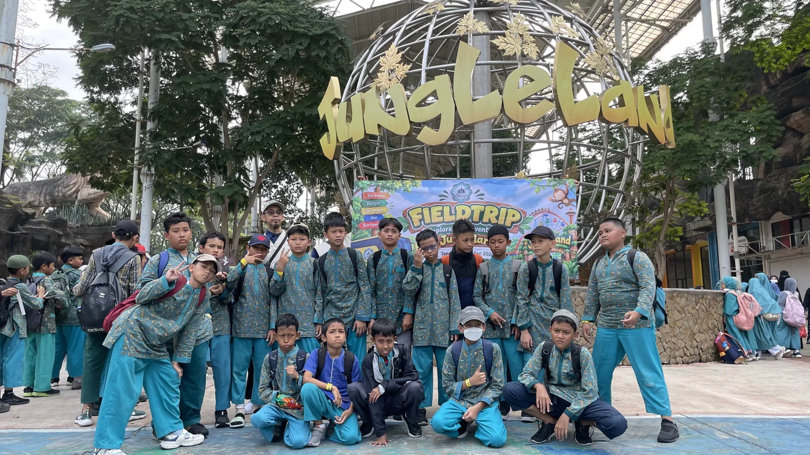
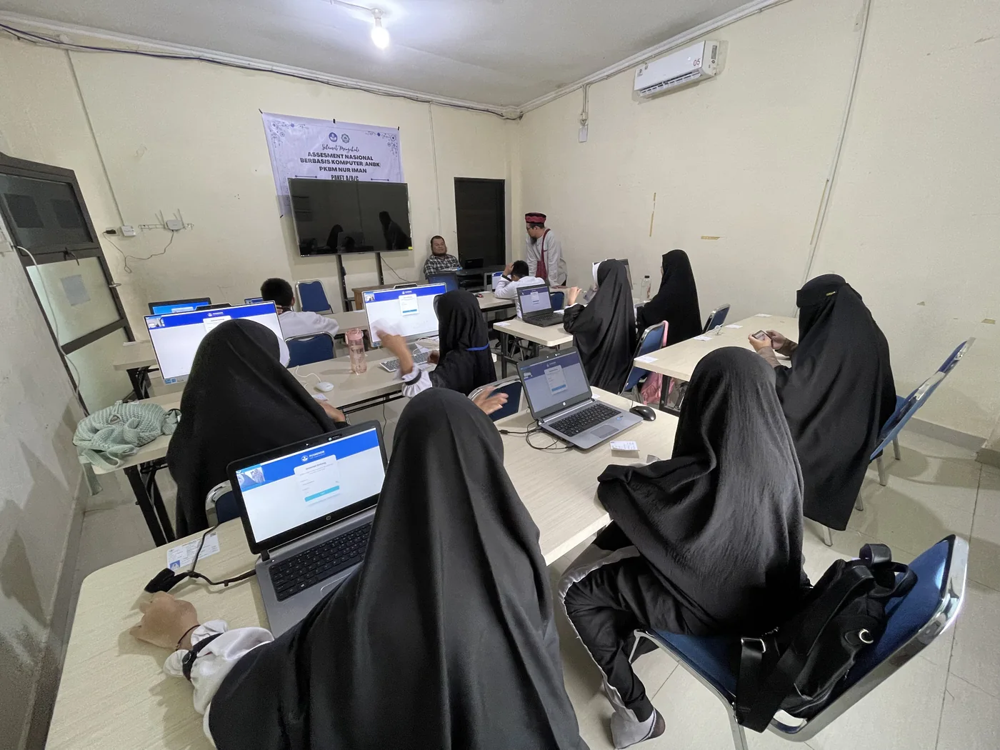
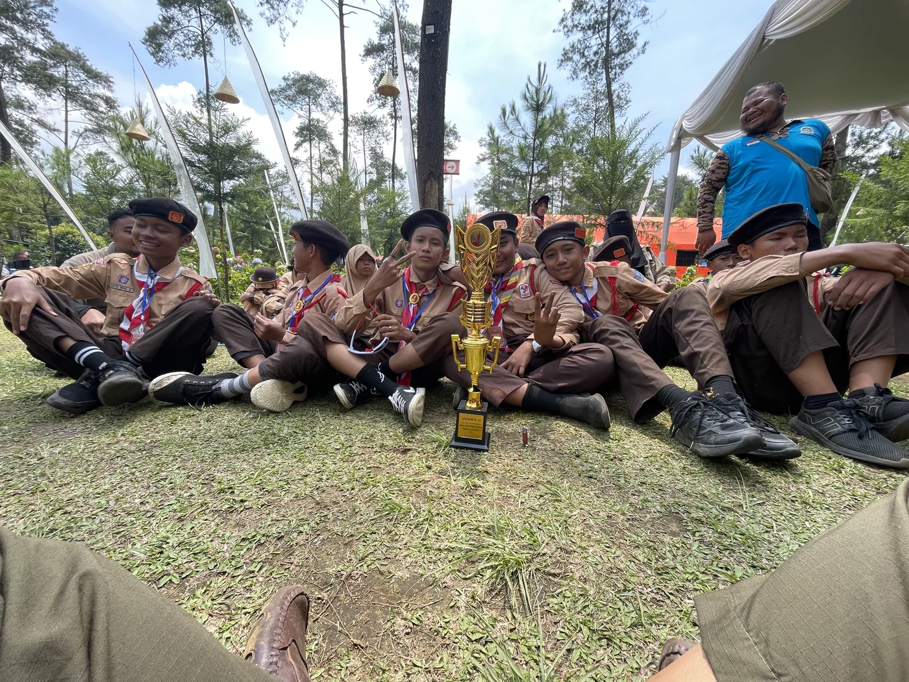
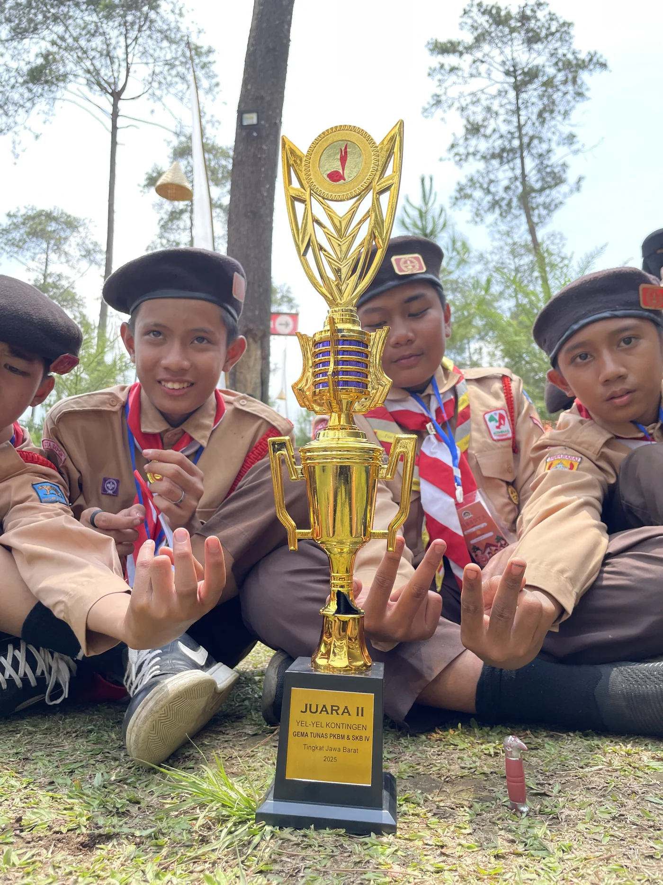
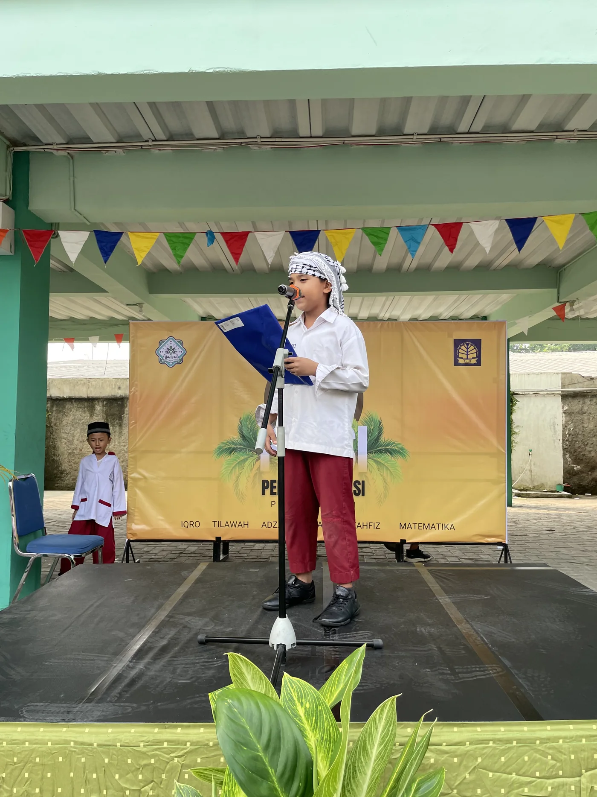

Field Trip ke Jungleland
Kegiatan program di luar kelas
ProgramBersama NIIS, menyiapkan generasi berilmu, berakhlak, dan mandiri di era digital.
🌱 Saling Menggenggam, Bertumbuh Bersama di NIIS
Kegiatan program di luar kelas
Program
Penguatan keterampilan digital
Belajar
Pembinaan karakter dan kebersamaan
Karakter
Apresiasi atas usaha dan pencapaian
Prestasi
Ruang kreativitas dan bakat
KreativitasDokumentasi kegiatan belajar, program, prestasi, dan kebersamaan.
NUR IMAN ISLAMIC SCHOOL / PKBM NUR IMAN hadir untuk membangun lingkungan belajar yang Islami, aman, nyaman, dan mendukung perkembangan akademik serta karakter peserta didik.
Proses pendidikan diarahkan pada penguatan aqidah, ibadah, akhlak mulia, kemampuan akademik, serta kecintaan kepada Al-Qur’an dan As-Sunnah.
Perpaduan pembelajaran, adab, kedisiplinan, dan pembiasaan Islami dalam keseharian.
Penguatan pemahaman dan praktik nilai-nilai Islam dalam kehidupan sehari-hari.
Membimbing kemampuan membaca Al-Qur’an dan hafalan secara bertahap.
Suasana belajar yang nyaman dan mendukung tumbuh kembang peserta didik.
Membangun kebiasaan baik, tanggung jawab, dan kemandirian.
Lingkungan sekolah yang aman, bersih, dan mendukung proses belajar.

Ruang belajar nyaman untuk mendukung konsentrasi peserta didik.
Mendukung pembelajaran dan pengembangan keterampilan peserta didik.
Suasana belajar yang bersahabat dan memperhatikan kebutuhan anak.
Informasi biaya yang tercantum untuk PPDB Tahun Pelajaran 2027/2028.
Isi formulir singkat di samping. Setelah dikirim, Anda akan diarahkan ke WhatsApp Admin PKBM NUR IMAN untuk konfirmasi pendaftaran.
Jl. Tumaritis 1 No. 8, Harjamukti, Cimanggis, Depok
WhatsApp Admin